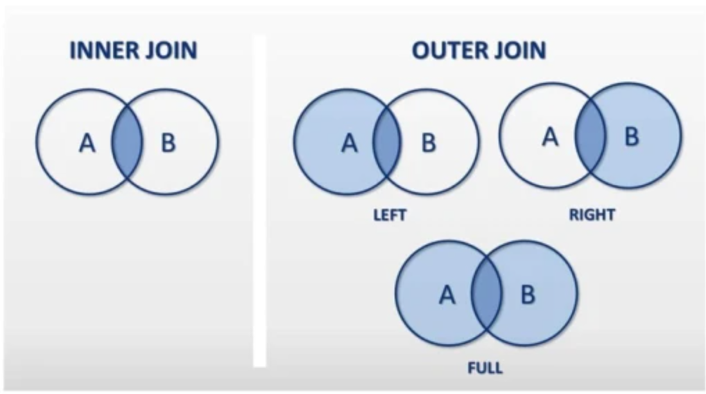

Управление данными:
- INSERT (TODO)
- DELETE (TODO)
- SELECT (TODO)
-
- WHERE (TODO) ограничение по выборке . Оно выполняется до того, как будет получен результат операции.
- HAVING (TODO) фильтр . Оно применяется к результату операции и выполняется уже после того как этот результат будет получен .
-
- GROUP BY (TODO) для объединения результатов выборки по одному или нескольким столбцам
- ORDER BY (TODO) сортировка
- DISTINCT (TODO) что следует работать только с уникальными значениями столбца
-
- FETCH (TODO) fetch first rows only
- OFFSET (TODO)
- LIMIT (TODO)
-
- NOT (TODO)
- AND (TODO)
- OR (TODO)
- LIKE (TODO)
-
- ON (TODO)
-
- BETWEEN (TODO)
- IN (TODO)
- IS NULL (TODO)
- IS NOT NULL (TODO)
-
- DECODE (TODO) аналог switch-case в Java
- CONCAT (TODO) конкатенировать строки
-
- CONSTRAINT (TODO) особые условия для вводимых данных (есть отдельная вкладка в IDE)
агрегатные функции:
- COUNT(*) - подсчитывает количество строк в таблице, не игнорирует значение NULL, поскольку эта функция оперирует строками, а не столбцами.
- COUNT(price) - подсчитывает количество значений в колонке "price". эта форма функции COUNT игнорирует значение NULL.
- SUM(price) - Возвращает сумму значений в указанном столбце
- AVG(price) - Возвращает среднее значение в указанном столбце
- MIN(price) - Возвращает минимальное значение в указанном столбце
- MAX(price)- Возвращает максимальное значение в указанном столбце
типы JOIN-ов:

- INNER JOIN - внутреннее соединение. В результирующем наборе присутствуют только записи, значения связанных полей в которых совпадают.
- LEFT JOIN - левое внешнее соединение. В результирующем наборе присутствуют все записи из table1 и соответствующие им записи из table2. Если соответствия нет, поля из table2 будут пустыми.
- RIGHT JOIN - правое внешнее соединение. В результирующем наборе присутствуют все записи из table2 и соответствующие им записи из table1. Если соответствия нет, поля из table1 будут пустыми.
- FULL JOIN - полное внешнее соединение. Комбинация двух предыдущих. В результирующем наборе присутствуют все записи из table1 и соответствующие им записи из table2. Если соответствия нет - поля из table2 будут пустыми. Записи из table2, которым не нашлось пары в table1, тоже будут присутствовать в результирующем наборе. В этом случае поля из table1 будут пустыми.
- CROSS JOIN - Результирующий набор содержит все варианты комбинации строк из table1 и table2. Условие соединения при этом не указывается.